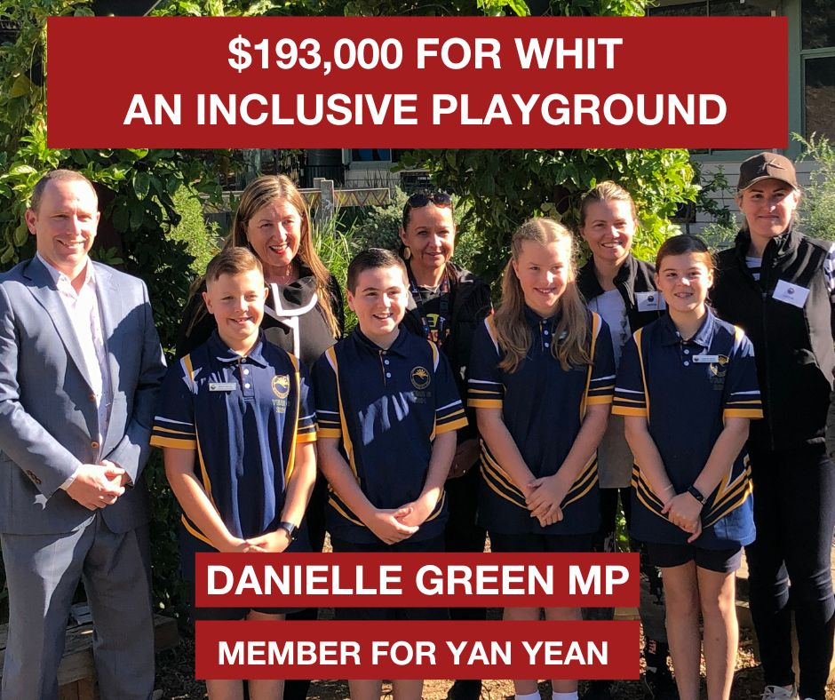
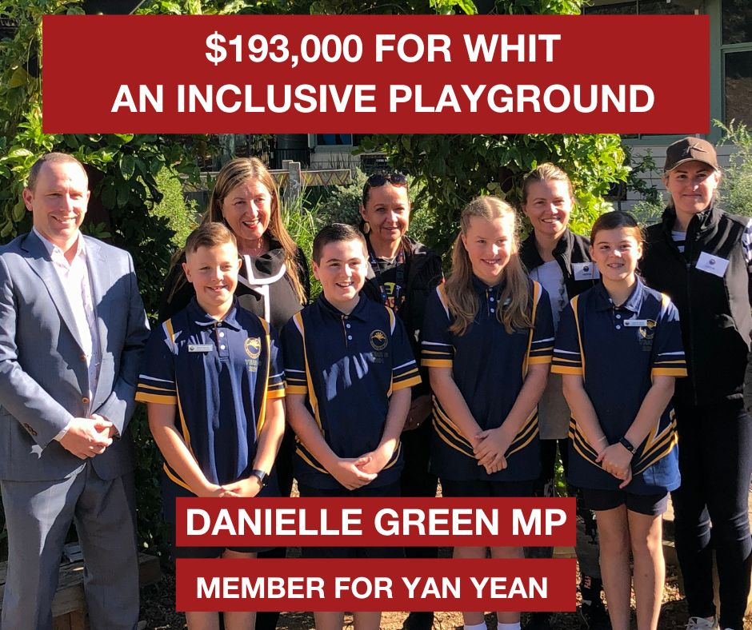

Welcome
This portfolio showcases my work across digital content, campaign strategy, and storytelling. It offers a glimpse into my approach to social media and public communications, featuring real examples of creative, engaging, and impactful work. I've also included select projects and challenges that highlight both my strategic thinking and adaptability in practice.
Reels & Posts
Behind the Scenes: Book Sorting
This reel uses a trending audio clip to showcase how the library organises books. It struck a chord with the community and generated strong engagement through relatable and playful content.
Library Memes
A simple yet effective post that taps into universal meme formats to make everyday library services feel more engaging.
Safe Online Surfing Campaign
This post launched our digital safety initiative. It demonstrates creative use of available tech to build awareness around internet safety and promote relevant programs.
Trend Remix: PinkPantheress Audio
This post experiments with a popular TikTok trend using the viral PinkPantheress “illegal” audio, bringing a fresh cultural lens to program promotion.
Branded Template Reel
This reel was designed using a template to highlight the library's brand and repurpose content that otherwise wouldn’t have been used, extending the shelf life of captured footage.
Exploring TikTok Trends
This reel aimed to explore whether library content could ride TikTok trends using only Instagram and Facebook. It served as a creative experiment in platform adaptability.
Graphics
Some previously edit images that I have done for various campaigns over my career.
.png)
 

Written Samples
These media releases showcase my ability to craft clear, engaging, and timely communications that align with organisational goals and resonate with diverse audiences. Each release demonstrates my understanding of strategic messaging, tone, and structure — whether promoting community programs, highlighting civic milestones, or engaging with local media.